Cesium 仓库 · 全球离线底图
Natural Earth II · 全球覆盖 · 低分辨率影像（不含三维高程）
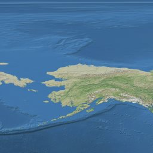
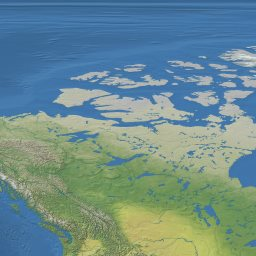
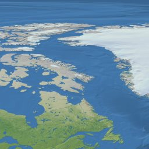
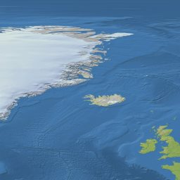
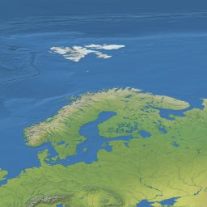
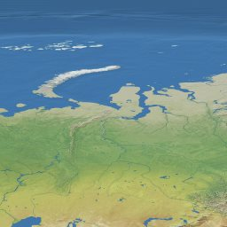
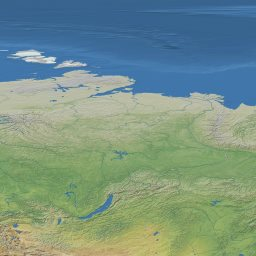
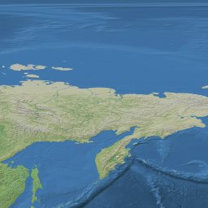
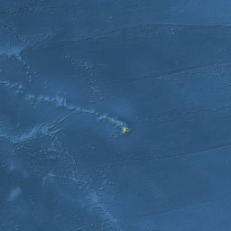
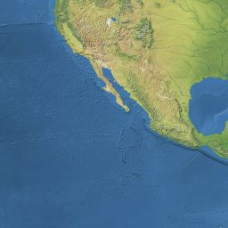
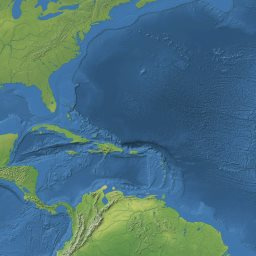
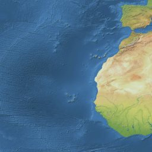
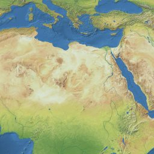
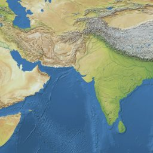
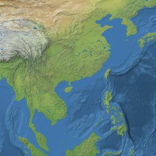
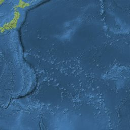
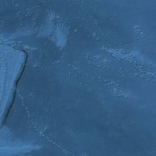
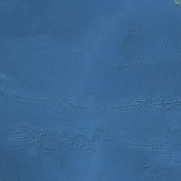
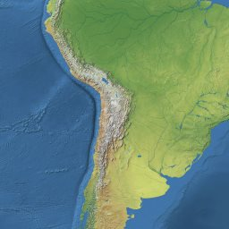
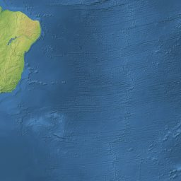
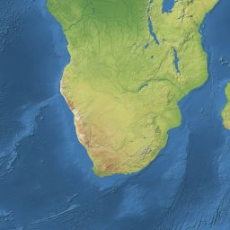
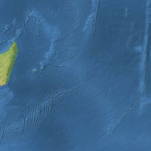
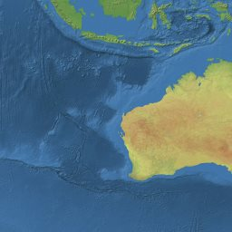
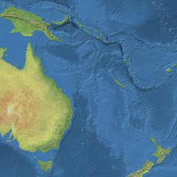
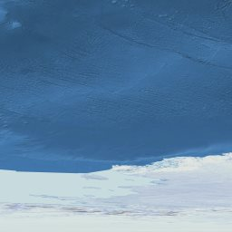
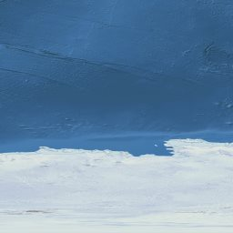
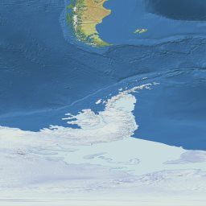
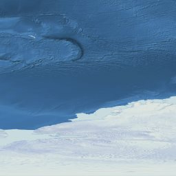
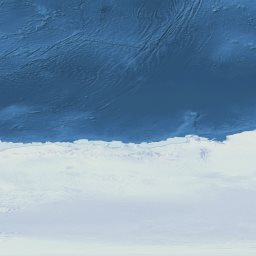
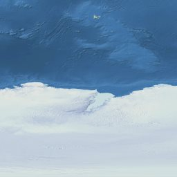
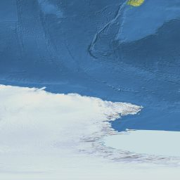
42 张瓦片 · EPSG:4326 · 最高级别 2（2048 × 1024）
数据由 CesiumGS/cesium 仓库下载，逐文件校验通过。当前飞行场景仍为本地演示机场。
来源与校验清单 · 资源说明 · 返回飞行模拟器